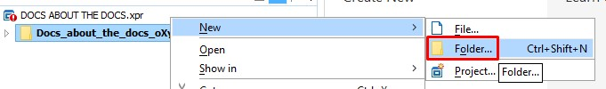
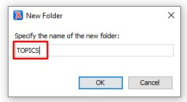
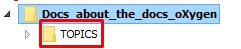

CREATING YOUR FIRST PROJECT
This section shows how to start a project in oXygen XML Editor.
- To start your first document you have to create New Project. To create a
new project click New Project on Welcome box Attention: If you do not have Welcome box, click on Help → Welcome
Figure 1. Figure: New Project 
- Now choose a project template, for starters, leave Deafault project template.
Next, specify the name of the new project file and choose the project directory
(localization of the project). Click Choose and Create.
Figure 2. Project File Name 
- Your Project Folder is created and ready to build.
Figure 3. New Project Folder 
- Next you have to create TOPICS Folder where you keep all DITA Topic
Types. Right-click PROJECT NAME and choose New → Folder →
Folder name: TOPICS → OK. This is the Folder for DITA Topics.
Figure 4. New TOPICS Folder Figure 5. TOPICS Folder Figure 6. TOPICS  - To keep images you need to create another Folder for IMAGES. It is the same way as TOPICS. Right-click the project PROJECT NAME and choose New → Folder → Folder name: IMAGES → OK.
- Creating a DITA Topic in Oxygen XML Editor
Right-click the TOPIC Folder, select New → File → Concept → Ttitle → File name → Create
Note: When name the File neme add “c_” at the beginning of your file name. 'c_' means ConceptFigure 7. New File TOPIC 

- Add some text to the Concept. Inster the cursor in the p element and
press Enter. oXygen shows you which elements you can place in the current
position
Figure 8. Adding some text to Concept 
Concept elements often used
-
Sections <section>: Includes <title>
-
Paragraphs <p>
-
Lists: unordered <ul>, ordered <ol>, definition lists <dl>
-
Tables <table>
-
Images <fig> or <image>
-
Code blocks <codeblock>
-
Code phrases <codeph>
-
Phrases <ph>,keywords <keyword> and terms <term>
-